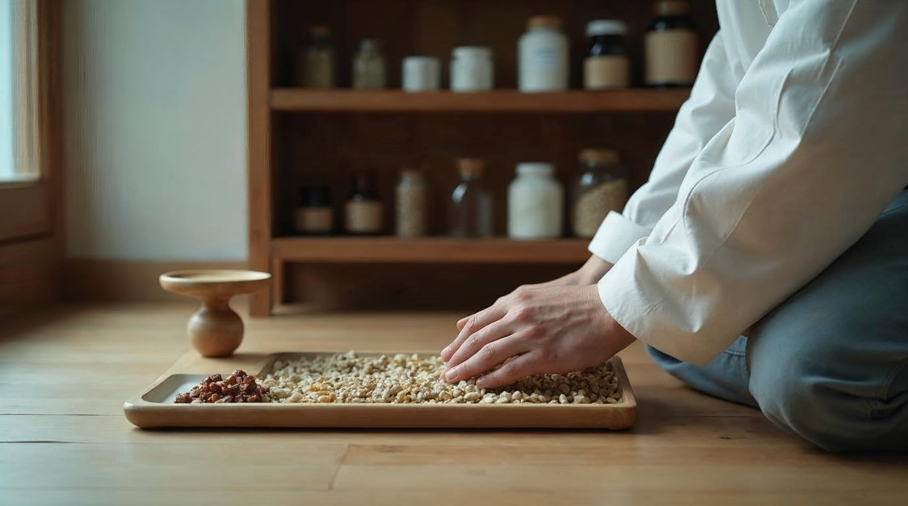
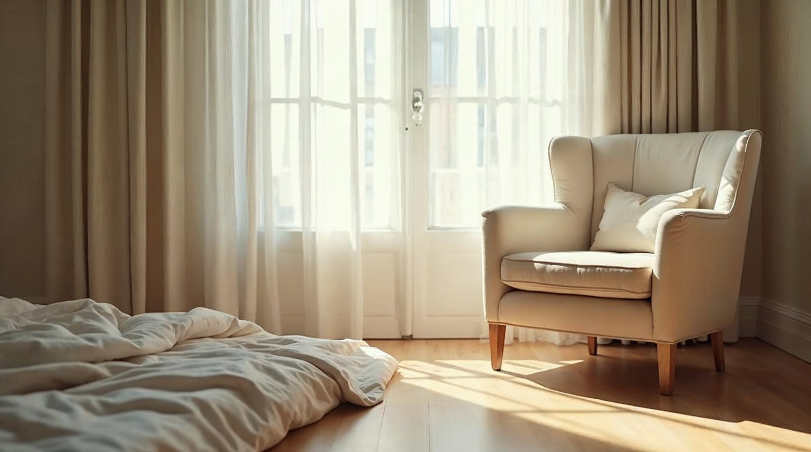
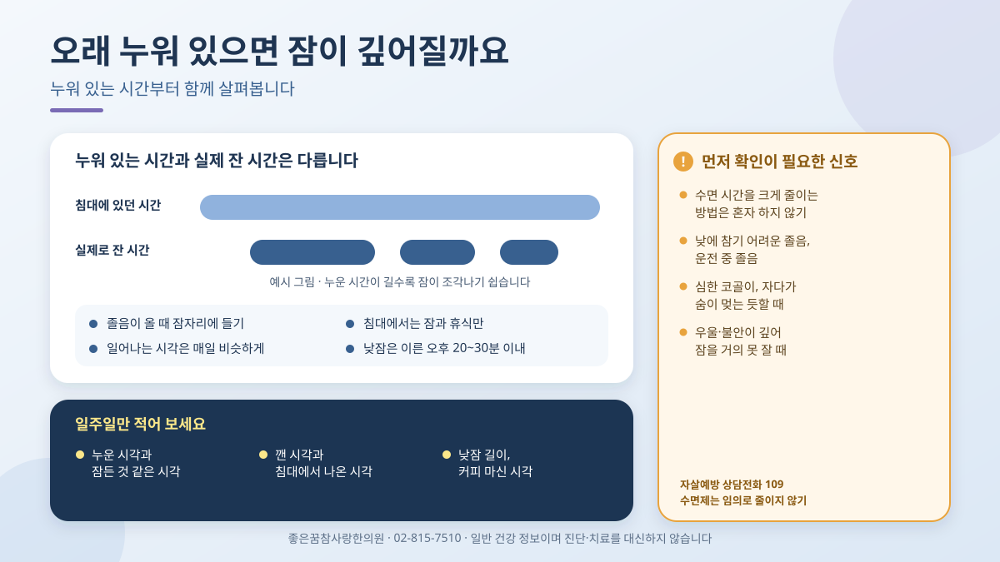

이종호 한의사 감수좋은꿈참사랑한의원 대표원장 (한의사 면허번호 19769)발행 2026-11-22 · 수정 2026-11-26
이 글의 차례
- 왜 오래 누워 있으면 잠이 얕아질 수 있나요
- 오래 누워 있게 되는 데는 이유가 있어요
- 낮 생활도 밤잠을 만들어요
- 불면과 비슷해 보이는 다른 경우는 어떻게 구분하나요?
- 먼저 이렇게 여쭙니다
- 일상에서 먼저 해 볼 수 있는 것
- 누워 있는 시간, 이렇게 정리해 보세요
- 나이가 들면서 잠이 달라지는 건 자연스러운 일이에요
- 예를 들면 이런 경우입니다
- 스스로 점검해 보세요
- 침대는 잠드는 곳으로만 남겨 두세요
- 자주 하는 오해
- 한의원에서 함께 살필 수 있는 경우
- 침대 밖에서 보내는 저녁
- 밤중에 깼을 때는 이렇게 해 보세요
- 얼마나 지켜보고, 언제 진료를 받을까요
- 처음 오시면 이렇게 살펴봅니다
- 이렇게 기록해 오시면 상담이 쉬워집니다
- 이런 증상은 먼저 확인이 필요합니다
오래 누워 있는다고 잠이 깊어지지는 않습니다. 실제로 자는 시간보다 침대에 머무는 시간이 훨씬 길면 잠이 여러 조각으로 나뉘고 뒤척이는 시간이 늘 수 있습니다. 잠이 부족하다고 느껴 일찍 눕고 늦게 일어나는 분일수록 누워 있는 시간부터 함께 살펴보는 것이 좋습니다.
진료실에서 이런 말씀을 자주 들어요. "원장님, 저는 밤 아홉 시에 누워서 아침 여덟 시에 일어나요. 열한 시간이나 누워 있는데 잔 것 같지가 않아요." 그러니까 사실은 누워 있는 시간이 길어서 오히려 잠이 얇게 퍼진 경우가 많아요. 부족한 잠을 채우려는 마음은 너무 당연한 건데, 몸은 그걸 반대로 받아들이는 거예요.
그래서 저는 "더 오래 누워 계세요"라고 말씀드리지 않아요. 얼마나 누워 있는지보다 누워 있는 동안 얼마나 자는지를 먼저 같이 보는 거예요.
왜 오래 누워 있으면 잠이 얕아질 수 있나요
- 졸리지 않은 상태로 누우면 잠들기까지 뒤척이는 시간이 길어지고, 그동안 걱정과 긴장이 쌓이기 쉽습니다.
- 잠을 불러오는 힘은 깨어 있는 동안 쌓이는데, 낮잠이나 늦잠으로 미리 써 버리면 밤잠이 가벼워질 수 있습니다.
- 침대에서 깨어 있는 시간이 반복되면 잠자리가 '잠드는 곳'보다 '애쓰는 곳'으로 느껴질 수 있습니다.
- 아침에 침대에서 오래 머물면 몸이 하루의 시작을 늦게 알아차려 저녁 졸음도 늦어질 수 있습니다.
잠을 끌어당기는 힘은 밥맛과 비슷해요. 저녁 먹기 전에 간식을 계속 집어 먹으면 정작 저녁밥이 맛이 없잖아요. 낮잠과 늦잠, 침대에서 뒤척이며 졸다 깨다 하는 시간이 그 간식 같은 거예요. 밤에 먹을 잠맛을 미리 조금씩 써 버리는 거죠.
여기서 두 가지를 나눠서 보셔야 해요. 누워 있는 시간과 실제로 잔 시간은 다른 얘기예요. 열 시간 누워 있어도 실제로 잔 건 여섯 시간일 수 있고, 일곱 시간 누워서 여섯 시간 반을 잘 수도 있어요. 몸이 개운한 건 대개 뒤쪽이에요. 같은 여섯 시간이라도 촘촘하게 잔 잠이 더 깊게 느껴지거든요.
오래 누워 있게 되는 데는 이유가 있어요
오래 누워 계신 분들을 탓하려는 게 아니에요. 다들 이유가 있거든요.
- 전날 못 잔 잠을 채우려고 일찍 눕는 경우
- 은퇴나 휴직으로 아침에 꼭 일어날 일이 없어진 경우
- 몸이 아프거나 기운이 없어 침대가 가장 편한 자리가 된 경우
- 걱정이 많아 일찍 누워서라도 쉬고 싶은 경우
- 추운 계절에 이불 밖이 싫어 아침에 계속 머무는 경우
이유가 다르면 손볼 곳도 달라져요. 그래서 저는 누워 있는 시간을 줄이자고 하기 전에 왜 오래 누워 계시게 됐는지부터 여쭤봐요.
낮 생활도 밤잠을 만들어요
밤잠은 밤에만 만들어지는 게 아니에요. 낮에 몸을 얼마나 쓰고 햇빛을 얼마나 봤는지가 밤에 잠을 끌어당기는 힘이 되거든요. 하루 종일 집 안에서 앉거나 누워 지낸 날은 몸이 피곤하다고 느껴도 정작 잠을 끌어당기는 힘은 약한 경우가 많아요.
운동을 세게 하실 필요는 없어요. 해 있을 때 30분쯤 천천히 걷는 것, 장을 보러 걸어서 다녀오는 것만으로도 충분해요. 일주일에 한 번 세게 하는 것보다 매일 조금씩 걷는 게 훨씬 좋아요. 저도 바쁜 날일수록 점심때 잠깐이라도 걸으려고 해요.
낮잠은 꼭 필요하면 이른 오후에 짧게만 주무세요. 저녁 무렵의 낮잠은 밤잠을 가장 많이 가져가요.
불면과 비슷해 보이는 다른 경우는 어떻게 구분하나요?
- 오래 자도 개운하지 않고 코골이가 심하거나 자다가 숨을 멈춘다는 말을 듣는다면, 잠자는 동안 숨이 막히는 문제가 없는지 수면 검사가 가능한 곳에서 확인해 보세요.
- 누우면 다리가 근질거리고 움직이고 싶어 잠들기 어렵다면 다리 쪽 불편이 잠을 방해하는 경우일 수 있어 따로 살펴봐요.
- 잠보다 기운과 의욕이 없어 하루 대부분을 누워 지낸다면 마음 상태를 함께 확인해야 해요.
- 허리나 어깨 통증 때문에 자세를 바꾸느라 자주 깬다면 통증부터 함께 살피는 게 먼저예요.
먼저 이렇게 여쭙니다
- 몇 시에 눕고, 실제로 잠드는 것은 몇 시쯤인가요?
- 밤중에 누워서 깨어 있는 시간이 하루 합쳐 얼마나 되나요?
- 아침에 눈을 뜬 뒤 침대에서 얼마나 더 머무나요?
- 낮잠을 자거나 주말에 몰아서 자는 편인가요?
- 낮에 졸음이 심하거나 집중이 어려운 정도는 어떤가요?
일상에서 먼저 해 볼 수 있는 것
- 일주일 동안 누운 시각, 잠든 것 같은 시각, 깬 시각을 적어 실제 수면 시간 확인하기
- 졸리지 않으면 억지로 일찍 눕지 말고, 졸음이 올 때 잠자리에 들기
- 잠든 시각과 상관없이 일어나는 시각은 매일 비슷하게 두기
- 침대에서는 휴대전화, 업무, 식사를 줄이고 잠과 휴식만 하기
- 낮잠이 필요하면 이른 오후에 20~30분 이내로 짧게 자기
숙제는 하나만 드릴게요. 일어나는 시각을 매일 같게 지켜 주세요. 전날 늦게 잠들었어도 그 시각엔 일어나는 거예요. 딴 건 처음엔 하던 대로 하셔도 돼요. 일어나는 시각이 기둥처럼 서면 잠드는 시각과 잠의 깊이는 그다음에 따라오는 경우가 많거든요.
누워 있는 시간, 이렇게 정리해 보세요
갑자기 크게 줄이면 낮에 졸음이 심해지고 몸이 힘들어서 오래 못 가요. 그래서 혼자 크게 줄이시기보다 기록을 가져오시면 함께 정하는 걸 권해요. 큰 흐름은 이래요.
- 일주일 동안 누운 시각, 잠든 것 같은 시각, 깬 시각을 적어 실제로 잔 시간 확인하기
- 일어나는 시각을 먼저 정하고 매일 지키기
- 졸음이 오기 전에는 침대에 눕지 않고 거실에서 조용히 지내기
- 침대에서 20~30분 넘게 뒤척이면 잠깐 일어나 어두운 곳에 앉아 있다가 졸릴 때 다시 눕기
- 누워 있는 시간과 잔 시간이 가까워지면 눕는 시각을 조금씩 앞당겨 보기
처음 며칠은 잠이 모자란 것처럼 오히려 더 피곤하게 느껴질 수 있어요. 그래도 잠이 조금씩 촘촘해지면서 아침이 가벼워지는 분들이 많아요. 최대한 천천히, 몸이 따라오는 속도로 가는 거예요.
아침에 일어나는 순간도 중요해요. 눈을 뜨면 누운 채 미적거리지 마시고 바로 일어나 커튼을 열어 주세요. 아침 빛을 보면 몸 안의 시계가 하루가 시작됐다고 맞춰지고, 그 시계가 저녁에 졸음이 올 시각까지 정해 줘요. 아침에 침대에서 30분을 더 누워 있으면 그만큼 밤 졸음도 늦게 오는 거예요.
나이가 들면서 잠이 달라지는 건 자연스러운 일이에요
젊을 때는 여덟 시간을 내리 자던 분도 나이가 들면 잠이 얕아지고 새벽에 일찍 깨는 경우가 많아요. 이건 원래 그런 거예요. 몸이 필요로 하는 잠의 모양이 바뀌는 거지, 어디가 고장 난 게 아니에요.
그런데 예전처럼 자야 한다는 생각에 일찍 눕고 늦게까지 누워 있으면, 잠은 더 얇아지고 걱정은 더 커져요. 그러니까 사실은 지금 내 몸에 맞는 잠의 길이를 찾는 게 먼저예요. 낮에 졸리지 않고 일상이 괜찮다면, 생각보다 짧게 자도 충분한 경우가 많아요.
예를 들면 이런 경우입니다
- 예를 들어 퇴직 뒤 아침 일정이 없어져 열 시까지 누워 있게 된 경우라면, 아침 산책이나 장보기처럼 정해진 시각에 나갈 일을 하나 만들어 보는 거예요.
- 예를 들어 전날 못 잤다고 다음 날 저녁 여덟 시에 눕는 경우라면, 졸음이 올 때까지 거실에서 조용히 지내다 평소 시각 즈음에 눕는 쪽을 권해요.
- 예를 들어 주말마다 정오까지 침대에 머무는 경우라면, 주말 기상 시각을 평일보다 한 시간 안쪽으로만 늦추는 것부터 시작해요.
스스로 점검해 보세요
- 누워 있는 시간이 실제로 자는 시간보다 두 시간 넘게 길다
- 졸리지 않은데도 정해진 시각이라 침대에 눕는다
- 눈을 뜬 뒤에도 침대에서 30분 넘게 머문다
- 침대에서 휴대전화나 텔레비전을 오래 본다
- 낮잠을 한 시간 넘게 자는 날이 많다
- 주말과 평일의 기상 시각이 두 시간 넘게 차이 난다
- 잠자리에 누우면 '오늘도 못 자면 어떡하지' 하는 생각이 든다
해당하는 항목이 여럿이라면 진료 때 표시해서 가져와 주세요.
침대는 잠드는 곳으로만 남겨 두세요
몸은 장소를 기억해요. 식탁에 앉으면 배가 고파지고, 책상에 앉으면 일할 준비가 되는 것처럼요. 그런데 침대에서 휴대전화도 보고, 일도 하고, 밥도 먹고, 걱정도 하다 보면 몸은 침대를 잠드는 곳이 아니라 이것저것 하는 곳으로 기억하게 돼요.
그래서 침대에서는 잠과 휴식만 하시는 게 좋아요. 휴대전화 충전기는 침대에서 손이 닿지 않는 곳으로 옮기고, 텔레비전은 거실에서 보세요. 처음엔 허전해도 몇 주 지나면 침대에 누웠을 때 졸음이 더 빨리 오는 걸 느끼시는 분들이 많아요.
자주 하는 오해
- 잠은 많이 잘수록 좋다고 생각하기 쉬운데, 필요한 잠의 양은 사람마다 다르고 나이가 들면 조금 줄어드는 것도 원래 자연스러운 변화예요.
- 일찍 누우면 그만큼 일찍 잠들 거라고 여기기 쉽지만, 졸리지 않을 때 누우면 뒤척이는 시간만 늘어나는 경우가 많아요.
- 못 잔 다음 날은 낮잠으로 채워야 한다고 생각하는 분도 있는데, 길게 자면 그날 밤잠이 다시 밀릴 수 있어요.
- 침대에서 책이나 영상을 보다 자연스럽게 잠드는 게 좋다고 여기는 분도 있지만, 침대에서 깨어 하는 일이 많아질수록 잠자리가 잠드는 곳이라는 신호가 흐려져요.

한의원에서 함께 살필 수 있는 경우
- 누워도 머릿속이 바빠 한참 뒤척이는 경우, 저녁 시간의 긴장과 생활 습관을 함께 살핍니다.
- 밤중에 여러 번 깨고 다시 잠들기 어려운 경우, 낮 활동량과 몸의 온기, 소화 상태를 함께 살핍니다.
- 오래 자도 아침에 몸이 무거운 경우, 잠의 길이보다 잠의 질과 목·어깨 긴장을 함께 살핍니다.
좋은꿈참사랑한의원에서는 먼저 일주일 동안의 잠 기록을 함께 보며 눕는 시각과 깨는 모양을 여쭙고, 진맥을 기본으로 하고 필요하다고 판단될 때 설진을 더해 몸의 긴장과 소화 상태를 살핍니다. 그 뒤 상태에 맞춰 침이나 한약 상담 등을 정하고, 귀가 전에는 다음 주까지 조정해 볼 눕는 시각과 기록할 항목을 알려 드립니다.
침대 밖에서 보내는 저녁
일찍 눕지 않으려면 저녁 시간을 보낼 곳이 있어야 해요. 거실에 편한 의자 하나를 두고, 조명을 조금 낮춘 채 책을 읽거나 음악을 듣거나 가벼운 손일을 해 보세요. 졸음이 와서 고개가 끄덕여질 때 침대로 가는 거예요.
저녁 늦게 소파에서 텔레비전을 켜 둔 채 깜빡 조는 건 피해 주세요. 그 짧은 잠이 밤잠의 맛을 미리 가져가거든요. 졸음이 오면 참지 말고 그때 침대로 가시면 돼요.
밤중에 깼을 때는 이렇게 해 보세요
밤에 깨는 건 누구에게나 있는 일이에요. 깼다고 바로 시계를 보거나 휴대전화를 켜지 마시고, 누운 채 천천히 숨을 고르며 몸에 힘을 빼 보세요. 그래도 한참 동안 잠이 오지 않으면 잠깐 일어나 어두운 거실에 앉아 있다가 졸릴 때 다시 누우세요.
억지로 자려고 애쓸수록 잠은 더 멀어져요. 잠은 붙잡으려 하면 달아나고, 내려놓으면 찾아오는 손님 같은 거예요. 깨어 있어도 괜찮다는 마음으로 쉬다 보면 오히려 다시 잠이 찾아오는 경우가 많아요.
얼마나 지켜보고, 언제 진료를 받을까요
일어나는 시각을 지키고 졸릴 때 눕는 습관을 2~3주쯤 해 보세요. 그래도 밤마다 한참을 뒤척이거나 낮에 기운이 없어 일상이 힘들다면 혼자 애쓰지 마시고 진료를 받아 보세요. 기록을 함께 가져오시면 어디서부터 손볼지 정하기가 훨씬 쉬워요.
처음 오시면 이렇게 살펴봅니다
모든 분의 맥을 먼저 짚고 시작해요. 그다음 일주일 동안의 잠 기록을 같이 보면서 눕는 시각과 잠드는 시각, 밤중에 깨는 모양, 아침에 침대에서 나오는 시각을 여쭤봐요. 낮잠과 커피, 하루 활동량도 함께 여쭙고요.
필요하다고 판단되면 혀를 보는 설진을 더하고, 목과 어깨의 긴장, 배의 상태도 살펴요. 그 뒤 침이나 한약 상담 가운데 지금 상태에 맞는 방법을 함께 정해요. 한약을 생각할 때는 드시는 수면제나 신경안정제, 건강식품을 먼저 확인하고, 처방받은 약은 처방한 의사와 상의 없이 줄이거나 끊지 않아요.
보통은 한 달쯤 지켜보고 다시 판단하는 경우가 많아요. 누워 있는 시간을 조정하는 것도 기록을 보며 조금씩, 함께 정해요.
한의학에서는 잠을 몸 전체의 흐름 속에서 봐요. 낮에 기운이 처지고 손발이 차고 소화가 더딘 분, 저녁만 되면 머리가 복잡하고 몸에 열이 오르는 분처럼 잠이 얕아지는 모양도 사람마다 달라요. 그래서 같은 불면이라도 살피는 곳과 방법이 달라지는 거예요. 무엇을 할지는 이유를 먼저 설명드리고 함께 정해요.

이렇게 기록해 오시면 상담이 쉬워집니다
- 날마다 누운 시각, 잠든 것 같은 시각, 깬 시각, 침대에서 나온 시각
- 밤중에 깬 횟수와 다시 잠들기까지 걸린 대략의 시간
- 낮잠 여부와 길이, 커피를 마신 시각
- 복용 중인 수면제나 신경안정제, 건강식품
기록은 아침에 일어나서 한 번에 적으시면 돼요. 밤중에 시계를 보며 적으려고 하면 오히려 잠이 깨거든요. "열한 시쯤 누웠고 한 시쯤 잠든 것 같다"처럼 대략 적으셔도 충분해요. 일주일만 모아도 누워 있는 시간과 잔 시간의 차이가 눈에 보이는 경우가 많아요.
이런 증상은 먼저 확인이 필요합니다
- 낮에 참기 어려운 졸음이 있거나 운전 중 졸린 경우
- 우울감이 깊거나 스스로를 해칠 생각이 드는 경우(☎ 109로 바로 연락하세요)
이런 신호가 있으면 한의원보다 가까운 병원이나 응급실을 먼저 찾으세요.
잠을 잘 자고 싶은 마음이 클수록 침대에 오래 머물게 되는 거예요. 그건 누구라도 그래요. 그 마음은 그대로 두고, 방법만 조금 바꿔 보는 거예요. 궁금한 건 기록을 들고 오셔서 편하게 물어보세요.

여쭙는 것
- 몇 시에 눕고, 실제로 잠드는 것은 몇 시쯤인가요?
- 밤중에 누워서 깨어 있는 시간이 하루 합쳐 얼마나 되나요?
- 아침에 눈을 뜬 뒤 침대에서 얼마나 더 머무나요?
생활에서 해 볼 것
- 일주일 동안 누운 시각, 잠든 것 같은 시각, 깬 시각을 적어 실제 수면 시간 확인하기
- 졸리지 않으면 억지로 일찍 눕지 말고, 졸음이 올 때 잠자리에 들기
- 잠든 시각과 상관없이 일어나는 시각은 매일 비슷하게 두기
한의원에서 함께 살필 것
- 누워도 머릿속이 바빠 한참 뒤척이는 경우, 저녁 시간의 긴장과 생활 습관을 함께 살…
- 밤중에 여러 번 깨고 다시 잠들기 어려운 경우, 낮 활동량과 몸의 온기, 소화 상태…
- 오래 자도 아침에 몸이 무거운 경우, 잠의 길이보다 잠의 질과 목·어깨 긴장을 함께…
먼저 확인이 필요한 신호
- 낮에 참기 어려운 졸음이 있거나 운전 중 졸린 경우
- 우울감이 깊거나 스스로를 해칠 생각이 드는 경우(109로 바로 연락하세요)
한눈에 보는 표
| 구분 | 핵심 |
|---|---|
| 여쭙는 것 | 몇 시에 눕고, 실제로 잠드는 것은 몇 시쯤인가요? 밤중에 누워서 깨어 있는 시간이 하루 합쳐 얼마나 되나요? |
| 생활에서 해 볼 것 | 일주일 동안 누운 시각, 잠든 것 같은 시각, 깬 시각을 적어 실제 수면 시간 확인하기 졸리지 않으면 억지로 일찍 눕지 말고, 졸음이 올 때 잠자리에 들기 |
| 한의원에서 함께 살필 것 | 누워도 머릿속이 바빠 한참 뒤척이는 경우, 저녁 시간의 긴장과 생활 습관을 함께 살핍니다. 밤중에 여러 번 깨고 다시 잠들기 어려운 경우, 낮 활동량과 몸의 온기, 소화 상태를 함께 살핍니다. |
| 먼저 확인이 필요한 신호 | 낮에 참기 어려운 졸음이 있거나 운전 중 졸린 경우 우울감이 깊거나 스스로를 해칠 생각이 드는 경우(109로 바로 연락하세요) |
자주 묻는 질문
누워 있는 시간을 얼마나 줄여야 하나요?
사람마다 달라서 일주일 정도의 수면 기록을 먼저 봅니다. 혼자 갑자기 크게 줄이기보다 기록을 가져와 함께 정하시길 권합니다.
눈을 감고 누워만 있어도 쉬는 것 아닌가요?
몸이 쉬는 면은 있지만, 누워서 걱정과 뒤척임이 길어지면 잠자리가 불편한 곳으로 느껴질 수 있어 졸릴 때 눕는 쪽을 권합니다.
주말에 몰아서 자면 부족한 잠이 채워지나요?
조금 더 자는 것은 괜찮지만 평일과 차이가 크면 월요일 밤잠이 늦어질 수 있어 1~2시간 이내로 맞추기를 권합니다.
잠 기록은 어떻게 적으면 되나요?
종이나 휴대전화 메모에 눕고 깬 시각만 적어도 충분합니다. 정확한 분 단위보다 대략의 흐름이 중요합니다.
좋은꿈참사랑한의원은 재진 때 지난번 이야기부터 이어서 여쭙니다. 진료시간과 예약은 오시는 길에서 확인하세요.
어디서 상담받을 수 있나요?
좋은꿈참사랑한의원은 서울 동작구 만양로2길 2 신성빌딩 3층·5층(서울 동작구 상도동, 7호선 상도역 3번 출구 근처)에 있습니다. 한의사 3명(이종호 대표원장, 조영기 수석진료원장, 정원영 진료원장)이 진료합니다. 진료시간은 평일 09:30~20:00(점심 13:00~14:00), 토·일·공휴일 09:30~15:00이며, 방문 전 전화로 확인을 권합니다. 예약은 네이버 예약, 카카오톡 상담, 전화 02-815-7510로 받습니다.
이 글은 일반적인 건강 정보이며 개인의 진단이나 치료를 대신하지 않습니다. 증상이 있거나 복용 중인 약이 있다면 진료를 통해 확인하세요. 치료 효과는 개인마다 다를 수 있습니다.
작성 기준: 일반적으로 알려져 있는 건강 정보를 참고해 정리했습니다(대표원장 감수). 증상 기록은 1~2주 동안 하루 1회, 비슷한 시간에 적어 오시면 지난 상태와 비교하기 쉽습니다.